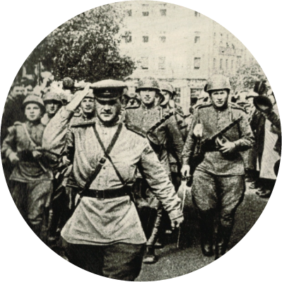

1939
Официальная дата создания предприятия на базе производства активированных древесных
углей в Цехе №1.
В 40-е годы путем парогазовой активации древесного угля-сырца (в основе – породы лиственных
деревьев: липа, береза),
а также косточки плодов фруктовых деревьев на заводе получали 8 видов активированного
угля.
1941
«Все для фронта, все для победы!» - этот девиз воспринимали как призыв к самоотверженному труду и ответственному выполнению заданий. 95 тружеников цеха награждены медалью «За доблестный труд в Великую Отечественную войну 1941-1945 гг.».
«Всего за военные годы на битву с вероломным врагом с завода ушло около 500 человек. Из них 114 пали в боях за Родину». Из архивных материалов.
1942
Началась механизация тяжелого ручного труда: загрузка карбюризатора в сушильные вагоны, перекатка их из отделения обмазки в отделение сушки и т.д.
С 1942 года завод приступил к капитальному строительству. В годы войны построен Цех №3, где было организовано производство средств индивидуальной защиты органов дыхания в изготовлении которых применялся активированный уголь собственного производства.
1943
Цех №1 освоил переработку каменноугольного полукокса в активированный уголь для йодной промышленности и цветной металлургии.
1946
Трудными были послевоенные годы. Страна поднималась из разрухи. Завод выполняет план 1946 года на 123,5%. Начали выпускать ряд новых марок активированных углей на полукоксе: КАД-йодный (для поглощения йода из вод нефтяных скважин), КАД-молотый (для флотации полиметаллических руд) и другие.
1948
Пущен в эксплуатацию 2-й блок печей, что удвоило мощность цеха. Производственная годовая программа коллективом цеха выполнялась досрочно.
1954
Промышленность в СССР развивалась так бурно, что стало не хватать углеродных сорбентов на каменноугольной основе. Поэтому в 1954 году на предприятии появляется новый цех - №7. Постепенно в нем начался выпуск активированных гранулированных углей и катализаторов, в том числе АГ-2 и АР-3.
70-е

Производство расширяется, идет интенсивное строительство новых корпусов. Пущены в эксплуатацию: корпус 267 – производство кислых углей (ОУ-Б, ПН), корпус 266, корпус 300 – дробление и размол углей ОУ-А, ОУ-В, БАУ-А, БАУ-мф, ДАК, ДАР, АУП, ДКФ. В 1975 году работниками заводской научно-исследовательской лаборатории была разработана и внедрена в производство принципиально новая технология, которая исключила использование опасной серной кислоты и выбросы ядовитых окислов азота в атмосферу.
80-е
Сотрудники предприятия активно работают над улучшением качества углей. Печное отделение к.312 перешло на газооборот собственных газов активации, введены в эксплуатацию все блоки печей ПАК 4х6, закончилось строительство новых корпусов.
90-е
Распад Советского Союза не повлиял на количество заказов на активированные древесные угли. Появляются новые марки углей: АДА, АДБ, АДУ, АДУ-В, СПДК-27Д. Изготавливаются со Знаком Качества 6 видов продукции предприятия: активированный уголь АР-А, АР-Б, БАУ-А, КАД молотый, ОУ-Б.
В 1995 году начинается строительство на базе цеха №1 участка пиролиза древесины для производства угля-сырца, обеспечения производства своим сырьем.
2000-е
Продукция завода все также востребована в фармацевтической, химической, пищевой и других видах промышленности, для предупреждения последствий техногенных аварий и природных катаклизмов.
В 2005 год произошла авария на химическом заводе в г. Цзилинь (Китай). Огромный, серьезный заказ был выполнен работниками цеха № 1 за очень короткий срок. Более 300 тонн угля СПДК-27Д было отправлено для спасения р. Амур от нитробензола. Города Дальнего Востока: Хабаровск, Комсомольск-на-Амуре, Амурск спасены от техногенной аварии.
2006
Продолжается реконструкция цеха №1. Создано производство древесноугольных брикетов, построено и введено в эксплуатацию новое производство кислых углей, построена линия производства древесноугольного карбюризатора, введена в эксплуатацию новая дробилка и многое, многое другое.
Цех №7 также является масштабным производственным комплексом, состоящим из более полутора десятков площадок и зданий. В цехе внедряется перспективное оборудование: пресс-гранулятор, роликовая мельница и т.д. Применяются методики «Бережливого производства».
2013
Научно-техническая служба сорбционных и химических технологий АО «Сорбент» совместно с ПНИПУ в рамках Федеральной программы победило в конкурсе проектов по созданию высокотехнологичного производства. Результатом реализации проекта «Создание высокотехнологичного адаптивного производства углеродных сорбентов и фильтрующих материалов» явилось…